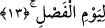
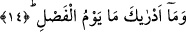

burada şöyle denmiş oluyor: Onlara denilir ki; Peygamberlere dâir işler; onların
toplanması ve getirilmesi ne zamana tehir edilmişti? Âyet bir başka âyette şöyle
açıklanıyor: “Allah’ın peygamberleri toplayıp da size ne cevap verildi” dediği gün,
“Bizim hiçbir bilgimiz yok, şüphesiz gizlilikleri hakkıyla bilen ancak sensin”
diyeceklerdir. (el-Mâide, 5/109) Üzerinde durduğumuz âyetteki sorudan maksad o
günün şanını yüceltmek ve korkusundan hayret uyandırmaktır.
Kâşânî bu âyet-i kerîmeyi kendine özgü ifâdelerle şöyle anlıyor: Elçiler yâni sevap
ve cezâ melekleri tâyin edilip belirlendiğinde ya müjde, rahat ve esenlik vermek, ya da
azâb, çile ve zillet ulaştırmak için kendilerine tâyin edilen zamana ulaştıklarında
denilecek ki bütün bunlar hangi gün için ertelendi. Bunlar peşinen sevabın ve cezânın,
amelin işlendiği gün verilmeyip ertelendiği o büyük gün içindir. Bir de beşer elçiler
yâni peygamberler tâyin edildiklerinde ve kendileri için itâatkâr ile âsîyi, saîd ile
şakî’yi birbirinden ayırmaları için belirlenmiş olan güne ulaştıklarında denilecek ki
bütün bunlar hangi güne ertelenmişti? Peygamberler itâatkar ile âsîyi, saîd ile şakîyi
birbirinden ayırabileceklerdir? Çünkü onlar herkesi sîmâsından tanıyacaklardır.
13. Ayırım gününe.
Bu son âyet-i kerîme ertelenme gününün hangi gün olduğunu beyân etmek için
getirilmiştir. O hâlde bu ertelenme günü yaratıklar arasında ayırım yapılacağı ve
hakların sâhiplerine ulaştırılacağı, iyilik yapanla kötülük yapan arasında hüküm
verileceği, Allah’ın birliğine inananlar ile inanmayanlar arasında ayırım yapılacağı
gündür.
Bâzıları derler ki: O gün sevenle sevgili birbirinden ayrılacaktır. Ancak Allah
uğrunda, sırf Allah için birbiriyle muâmele yapanlar bundan hâriç olacaklardır. O gün
peygamberler annelerinden, babalarından, kardeşlerinden ayrılacaklardır. Ancak hak ve
adâlet üzere olanlar birbirlerinden ayrılmayacaklardır.
14. (Rasûlüm!) Ayırım gününün ne olduğunu sen nereden bileceksin!
Hüküm gününün ne olduğu, mâhiyetinin nasıl olduğu hakkında seni bilgilendiren ve bu
konuda sana bilgi sağlayan kimdir? Çünkü sen böyle bir günün benzerini görmüş
değilsin Senden önce hiç kimse de böyle bir günün şiddetini görmüş değildir ki, sen
bunu onlardan duymuş olasın.